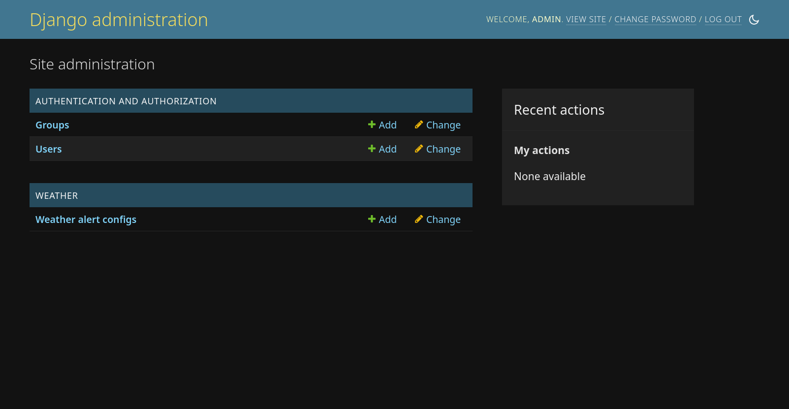
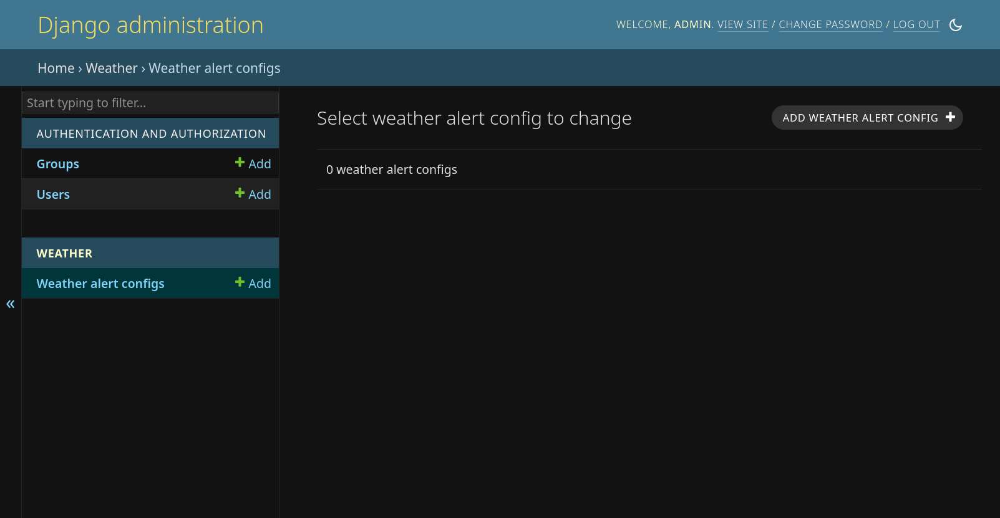
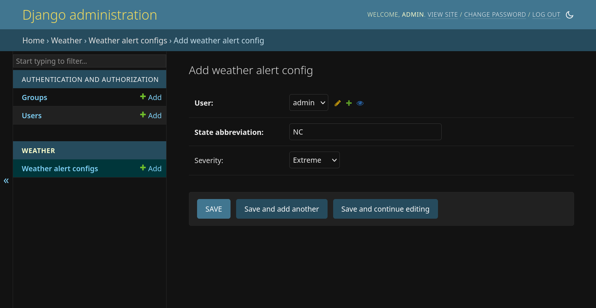
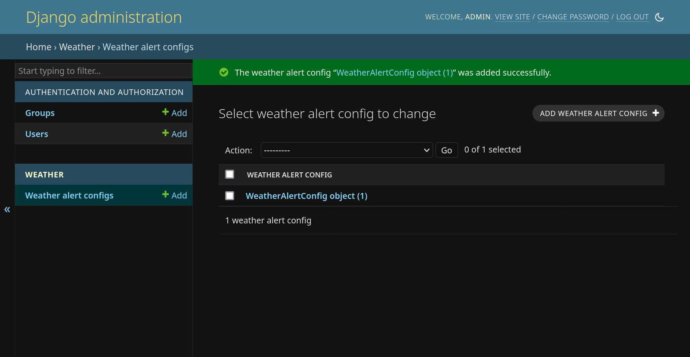

03 Data Modeling
Goals
In this lab we are going to:
- Gain an understanding of how Django's Object Relational Mapper works
- Modify the data model
- Create some data with Django Admin
Entity relationships
When building an API it's important to get your data model right early on. Unwinding mistakes down the road is difficult. Because it's hard to theorize an entire problem space, start small and iterate as you learn more.
Entity is a fancy synonym for noun or object. We use them to model the relationships between things. For our API we have a simple data model that lets users configure weather alerts.
erDiagram
User {
int id PK
string username
}
WeatherAlertConfig {
int id PK
int user_id FK
string state_abbreviation "The state where we want to see alerts"
enum severity "NEW! You're going to add me"
}
User ||--o{ WeatherAlertConfig : "has many"A couple of notes on the diagram:
- Each entity has an
idfield that represents its primary key. Django will automatically assign this to every model you create. WeatherAlertConfighas auser_idforeign key that points back to the owningUser. This forms a many-to-one relationship.
Our job today will be to add the new severity field to the
WeatherAlertConfig.
Mapping database records to Python objects
Django comes with an Object Relational Mapper (docs). It allows us to model database tables as Python objects, and then automatically generate the necessary changes in the database to store data.
Aside
It's hard to talk about data modeling without talking about SQL. Knowing SQL will make you a better backend developer. Unfortunately we don't have time to cover it today. In your free time check out a tutorial like sqltutorial.org.
Let's look at the model for our WeatherAlertConfig entity, which lives in
weather/models.py.
class WeatherAlertConfig(models.Model):
"""Configuration for an alert that a user is interested in."""
user = models.ForeignKey(User, on_delete=models.CASCADE)
state_abbreviation = models.CharField(max_length=2)
# TODO: below we'll add severity!
This model maps onto the entity diagram above. A couple of things to note:
useris aForeignKeyonto theUsermodel. Django will automatically create the underlyinguser_idforeign key in the table, and will make the relatedUserobject available at this property on instances of the model.- We don't need to specify an
idprimary key, because the underlyingmodels.Modelbase-class adds it for us. - Use descriptive names for your fields. For example,
statemay be confusing because it's not clear whether it's the full-state, or just the two-letterstate_abbreviationlike we've indicated.
Tweak the model and migrate
Right now, our users can tell the API which states they're interested in
getting weather alerts for, but the National Weather Service API that we rely
upon offers a few more things we can use to filter alerts. To see what's
available go to the National Weather Service API docs > Specification >
expand GET /alerts.
After consulting with users, we've found out they would also like to include
the severity field to avoid being inundated with low risk alerts. This is
an enum field, which means it can hold one of a set number of values:
ExtremeSevereModerateMinorUnknown
Add severity field
Let's wire this new severity field into the model.
- Open
weather/models.py. - Add a new class above
WeatherAlertConfigwith the following:class Severity(models.TextChoices): EXTREME = "Extreme" SEVERE = "Severe" MODERATE = "Moderate" MINOR = "Minor" UNKNOWN = "Unknown" - Now, add a new field to the
WeatherAlertConfigmodel that maps the text choices to a column in the database:severity = models.CharField( max_lenth=10, choices=Severity.choices, # Below options allow users to omit a severity if they want everything. blank=True, null=True, )
Afterward, weather/models.py should look similar to below:
from django.contrib.auth.models import User
from django.db import models
class Severity(models.TextChoices):
EXTREME = "Extreme"
SEVERE = "Severe"
MODERATE = "Moderate"
MINOR = "Minor"
UNKNOWN = "Unknown"
class WeatherAlertConfig(models.Model):
"""Configuration for an alert that a user is interested in."""
user = models.ForeignKey(User, on_delete=models.CASCADE)
state_abbreviation = models.CharField(max_length=2)
severity = models.CharField(
max_length=10,
choices=Severity.choices,
# Below options allow users to omit a severity if they want everything.
blank=True,
null=True,
)
Migrate changes
At this point we've made changes to our data model, but need to reflect those changes into the database. This is where migrations come into play. Django will inspect your models and the set of migrations, and then generate a new migration that closes any gaps between the two. To do this we'll use management commands with Django.
# diff weather/models.py and tables
docker-compose exec hackduke_django python manage.py makemigrations
# apply changes
docker-compose exec hackduke_django python manage.py migrate
Django Admin
Now that we've modeled our changes and applied them to the database, let's see what it looks like:
-
Navigate to Django Admin and log in with your superuser (admin) if necessary: http://127.0.0.1:8000/admin

-
Click on Weather alert configs and then ADD WEATHER ALERT CONFIG (top right)

-
Populate and save the alert (note that it automagically includes a dropdown for
severity)
-
The new alert appears in the list

Querysets
In Django, querysets are objects that build up a query to the database.
This lets you do things like construct a set of filters using inputs from
different places.
To see them in action, check out weather-alerts list endpoint in
weather/views.py, specifically the last line of this function:
@router.get("/alerts", response=list[WeatherAlertResponse])
def list_weather_alerts(request) -> list[WeatherAlertConfig]:
return WeatherAlertConfig.objects.filter(user=request.auth)
WeatherAlertConfig.objects returns a queryset. That itself has a .filter()
method we use to restrict the list of alerts to the current user. You can
chain these together and pass them around. This is simple example; see the
official Django querying docs for more complex ones.